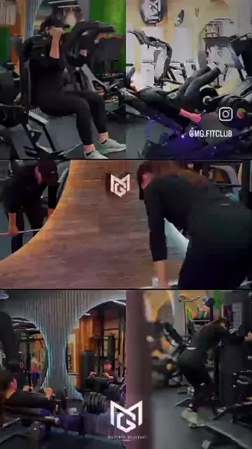

بدنسازی و فیتنس
برنامهریزی هدفمند و همراهی مربی برای ساختن فرم، قدرت و اعتمادبهنفس.
THE MG METHOD / 2026
سه روایت کوتاه از تیمی که تمرین بانوان را در شیراز دقیقتر، امنتر و حرفهایتر دنبال میکند.
خدمات MG
برنامهریزی هدفمند و همراهی مربی برای ساختن فرم، قدرت و اعتمادبهنفس.
تمرینهایی که از سالن بیرون میآیند و در حرکتهای واقعی زندگی به کارت میآیند.
EMS، آنالیز ترکیب بدن و آنالیز کوانتوم؛ شروع هر برنامه با شناخت دقیقتر.
MG در حرکت
تمرین، تغذیه و انگیزه؛ هر فیلم یک داستان.
پوستر را انتخاب کن و وارد داستانش شو.
 00:22
00:22یک ساعت برای خودت؛ فاصلهای از شلوغی روز.
تماشا و بیشتر ↖
00:40قدرت، از قولی که به خودت میدهی شروع میشود.
تماشا و بیشتر ↖ 00:35
00:35انتخابهای کوچک، بخشی از مسیر پیشرفت تو هستند.
تماشا و بیشتر ↖ 00:27
00:27همهچیز دست تو نیست؛ قدم بعدی میتواند انتخاب تو باشد.
تماشا و بیشتر ↖